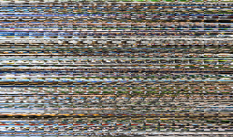
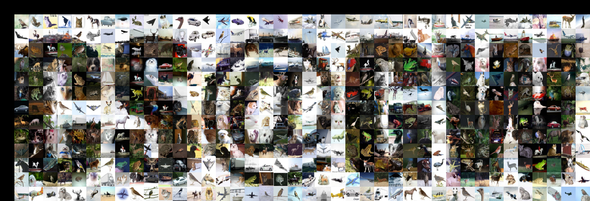
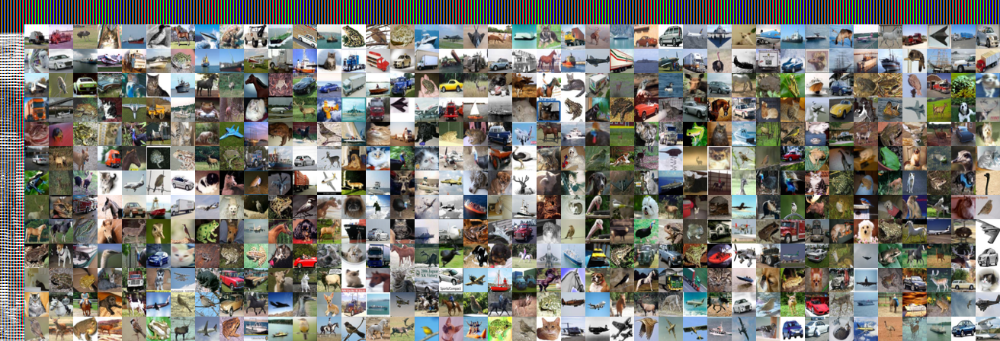

May 2022
Image mosaics
If you have many images, they can be arranged into a grid such that a newer, bigger image emerges. Practically, creating such an image mosaic consists of a desired bigger image, and a dataset of many images from which to build the bigger one. Breaking the bigger image into patches, each patch can be matched to a similar image in the dataset. Given a meaningful bigger image and related dataset of images, the results can be compelling. My goal in this project was to create an image mosaic for the GW Computer Science Department.
Making image mosaics
The code is rather simple. The desired big image is broken into many 'patches' (I made mine 16 pixels by 16 pixels), and then the dataset of images is searched over. I made a duplicate dataset of just the 16x16 images as vectors, so that the distance computations were a bit quicker, and from there it is just a matter of minimizing the distance from each desired (big image) patch to an image from the dataset. I didn't allow a dataset image to be used more than once (that would be lame), and so the order in which the patches are filled in affects the results, especially when dealing with a smaller dataset. Thus, I filled in the patches from the center outwards, as opposed to the more natural left to right, up to down ordering. A fun image to look at is a slice of a 150 dataset images as vectors. This is the form in which they are used for the differences squared computation.

And here is the code that makes an image mosaic using this matrix of vectorized images (called 'vectors' in the code). This code assumes that 'order', the ordered list of patch coordinates, is already decided. Like I mentioned above, I build the mosaic from the middle out to use the best images in the center.
As a target image, I made a simple white background and black text:For testing, I used the CIFAR-10 dataset which has many thousands of labeled images for training machine learning models, but of course suffices for our purposes too. If I go ahead and use 10,000=10^4 images from the dataset, we imediately get a crisp result:

On the other hand, if we only use 1000 images from the dataset while building the mosaic, we get the following less impressive result by comparison:
This observation is a bit forshadowing. Really, this is a dataset building project.
Building a dataset
Scraping Twitter, Instagram, etc was my first thought, but it turns out they don't make it easy to get images in bulk (I'm not the first to have tried...). Google images, however, are quite easy to scrape, and Fair Use is Fair Use. I started by scraping the first few pages of results from queries like "GW Computer Science", "GW Campus", and "GW RD Showcase". The resulting images had a terrible mix of duplicates, unrelated contents, and papers/banners/graphics that didn't look good in a mosaic. Here is that result.

In the end, it actually doesn't look bad from afar. The many images of white background with text (screen shots of a papers) do a good job filling in the white background of the target image, giving good contrast. That said, the result isn't a compelling one when you go to look at the individual images. Some cleaning of this dataset is necessary, and frankly, I just spent the time removing images by hand rather quickly and haphazardly. Here is the resulting image.

This almost looks like a step backwards. First of all, much of the outter border of the image isn't even getting unique images anymore because there aren't enough. Further, there is much less contrast in this mosaic. The solution: find more images for the dataset. I went on and added some images by hand from various CS Professor's website, lab webpages, and the CS Department website. Then, I took several dozen images with my phone in and around SEH. The slightly improved dataset gave me resulted in the following mosaic.

Now I need more images in this dataset. I really appreciate ideas on how to go about this. I already intend to (1) reach out to friends and ask for images they have, (2) take many more images myself, asking CS folks to stand here and there for them, and (3) scrape some more images from Google. Other ideas are appreciated!
Here is a link to the current dataset. The images are named i.png where i ranges from 0 to 623 in no particular order. As I've described, this dataset is a mere prototype of what it could turn into. It could be a nice project to open source for future GW CS students to build on and use in their own projects...
Dataset Contributors
Thank you very much to those who have contributed to this dataset!- Andy Feng
- Alyssa Ilaria
- Catherine Meadows
- Steven Yoon